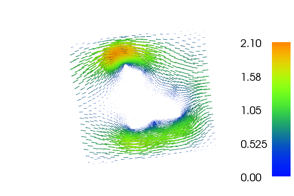
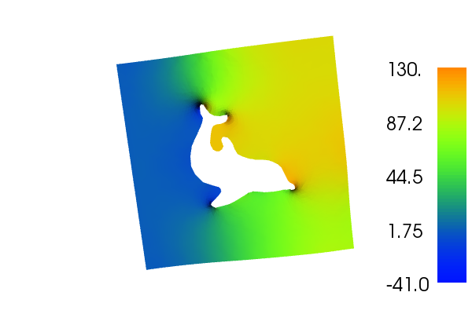

20. Stokes equations with stabilized first order elements¶
This demo illustrates how to:
- Solve the Stokes problem using a stabilized method
The velocity \(u\) and \(p\) will look as follows:
 20.1. Equation and problem definition¶
Strong formulation of the problem:
Note
The sign of the pressure has been flipped from the classical definition. This is done in order to have a symmetric (but not positive-definite) system of equations rather than a non-symmetric (but positive-definite) system of equations.
A typical set of boundary conditions on the boundary \(\partial \Omega = \Gamma_{D} \cup \Gamma_{N}\) can be:
The Stokes equations can easily be formulated in a mixed variational form; that is, a form where the two variables, the velocity and the pressure, are approximated simultaneously. Using the abstract framework, we have the problem: find \((u, p) \in W\) such that
for all \((v, q) \in W\), where
The space \(W\) should be a mixed (product) function space: \(W = V \times Q\) such that \(u \in V\) and \(q \in Q\). In this demo we will use first order elements in both velocity and pressure, which will lead to stability problems. Therefore we use a stabilized variational formulation. It reads as follows: find \((u, p) \in W\) such that
for all \((v, q) \in W\), where
where \(\delta = \beta h^2\) and \(\beta\) is some number and \(h\) is the mesh cell size.
In this demo, we shall consider the following definitions of the input functions, the domain, and the boundaries:
- \((\Omega = [0,1]\times[0, 1]) \backslash {\rm dolphin}\)
- \(\Gamma_D =\)
- \(\Gamma_N =\)
- \(u_0 = (- \sin(\pi x_1), 0.0) \, {\rm for} \, x_0 = 1 \, {\rm and} \, u_0 = (0.0, 0.0)\) otherwise
- \(f = (0.0, 0.0)\)
- \(g = (0.0, 0.0)\)
20.2. Implementation¶
First, the dolfin module is imported:
from dolfin import *
In this example, different boundary conditions are prescribed on
different parts of the boundaries. This information must be made
available to the solver. One way of doing this, is to tag the
different sub-regions with different (integer) labels. DOLFIN provides
a class MeshFunction which
is useful for these types of operations: instances of this class
represent functions over mesh entities (such as over cells or over
facets). Mesh and mesh functions can be read from file in the
following way:
# Load mesh and subdomains
mesh = Mesh("dolfin_fine.xml.gz")
sub_domains = MeshFunction("size_t", mesh, "dolfin_fine_subdomains.xml.gz")
Next, we define a MixedFunctionSpace composed of a
VectorFunctionSpace and a
FunctionSpace, both of
continuous piecewise linears.
# Define function spaces
scalar = FunctionSpace(mesh, "CG", 1)
vector = VectorFunctionSpace(mesh, "CG", 1)
system = vector * scalar
Now that we have our mixed function space and marked subdomains defining the boundaries, we create functions for the boundary conditions and define boundary conditions:
# Create functions for boundary conditions
noslip = Constant((0, 0))
inflow = Expression(("-sin(x[1]*pi)", "0"))
zero = Constant(0)
# No-slip boundary condition for velocity
bc0 = DirichletBC(system.sub(0), noslip, sub_domains, 0)
# Inflow boundary condition for velocity
bc1 = DirichletBC(system.sub(0), inflow, sub_domains, 1)
# Boundary condition for pressure at outflow
bc2 = DirichletBC(system.sub(1), zero, sub_domains, 2)
# Collect boundary conditions
bcs = [bc0, bc1, bc2]
Here, we have given four arguments to DirichletBC. The first specifies the
FunctionSpace. Since
we have a MixedFunctionSpace, we write
system.sub(0) for the VectorFunctionSpace, and
system.sub(1) for the FunctionSpace. The second argument specifies
the value on the Dirichlet boundary. The two last arguments specify the
marking of the subdomains; sub_domains contains the subdomain markers
and the number given as the last argument is the subdomain index.
The bilinear and linear forms corresponding to the stabilized weak mixed formulation of the Stokes equations are defined as follows:
# Define variational problem
(v, q) = TestFunctions(system)
(u, p) = TrialFunctions(system)
f = Constant((0, 0))
h = CellSize(mesh)
beta = 0.2
delta = beta*h*h
a = (inner(grad(v), grad(u)) - div(v)*p + q*div(u) + \
delta*inner(grad(q), grad(p)))*dx
L = inner(v + delta*grad(q), f)*dx
To compute the solution we use the bilinear and linear forms, and the
boundary condition, but we also need to create a Function to store the solution(s). The (full)
solution will be stored in w, which we initialize using the
MixedFunctionSpace system. The actual computation is performed by
calling solve with the arguments a, L and bcs. The
separate components u and p of the solution can be extracted
by calling the split function.
# Compute solution
w = Function(system)
solve(a == L, w, bcs)
u, p = w.split()
Finally, we can store to file and plot the solutions.
# Save solution in VTK format
ufile_pvd = File("velocity.pvd")
ufile_pvd << u
pfile_pvd = File("pressure.pvd")
pfile_pvd << p
# Plot solution
plot(u)
plot(p)
interactive()
20.3. Complete code¶
from dolfin import *
# Load mesh and subdomains
mesh = Mesh("../dolfin_fine.xml.gz")
sub_domains = MeshFunction("size_t", mesh, "../dolfin_fine_subdomains.xml.gz");
# Define function spaces
scalar = FunctionSpace(mesh, "CG", 1)
vector = VectorFunctionSpace(mesh, "CG", 1)
system = vector * scalar
# Create functions for boundary conditions
noslip = Constant((0, 0))
inflow = Expression(("-sin(x[1]*pi)", "0"))
zero = Constant(0)
# No-slip boundary condition for velocity
bc0 = DirichletBC(system.sub(0), noslip, sub_domains, 0)
# Inflow boundary condition for velocity
bc1 = DirichletBC(system.sub(0), inflow, sub_domains, 1)
# Boundary condition for pressure at outflow
bc2 = DirichletBC(system.sub(1), zero, sub_domains, 2)
# Collect boundary conditions
bcs = [bc0, bc1, bc2]
# Define variational problem
(v, q) = TestFunctions(system)
(u, p) = TrialFunctions(system)
f = Constant((0, 0))
h = CellSize(mesh)
beta = 0.2
delta = beta*h*h
a = (inner(grad(v), grad(u)) - div(v)*p + q*div(u) + \
delta*inner(grad(q), grad(p)))*dx
L = inner(v + delta*grad(q), f)*dx
# Compute solution
w = Function(system)
solve(a == L, w, bcs)
u, p = w.split()
# Save solution in VTK format
ufile_pvd = File("velocity.pvd")
ufile_pvd << u
pfile_pvd = File("pressure.pvd")
pfile_pvd << p
# Plot solution
plot(u)
plot(p)
interactive()